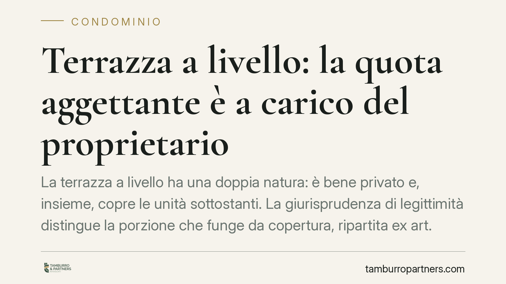

Terrazza a livello: la quota aggettante è a carico del proprietario
La terrazza a livello ha una doppia natura: è bene privato e, insieme, copre le unità sottostanti. La giurisprudenza di legittimità distingue la porzione che funge da copertura, ripartita ex art. 1126 c.c., dalla porzione aggettante oltre il muro perimetrale, che resta interamente a carico del proprietario esclusivo. Una distinzione che pesa sui preventivi e sulla validità delle delibere di spesa.

Il caso
La terrazza a livello è una superficie calpestabile posta al piano di un appartamento, del quale costituisce prolungamento, ma che al tempo stesso copre in tutto o in parte le unità immobiliari collocate al piano inferiore. Da questa doppia funzione – godimento esclusivo del proprietario e protezione delle porzioni sottostanti – nasce la questione del riparto delle spese di manutenzione e rifacimento.
Il punto controverso riguarda le terrazze che sporgono oltre il perimetro murario dell'edificio: la cosiddetta porzione aggettante, cioè quella parte che si estende in fuori senza coprire alcuna unità immobiliare sottostante.
Inquadramento normativo
Il riferimento è l'art. 1126 del Codice civile, dettato per i lastrici solari di uso esclusivo. La norma prevede che, quando l'uso del lastrico (o della terrazza a livello, per costante applicazione analogica) spetta a un solo condòmino, le spese di riparazione o ricostruzione siano ripartite così: un terzo a carico di chi ne ha l'uso esclusivo e due terzi a carico dei proprietari delle unità cui il lastrico serve da copertura, in proporzione al valore delle rispettive proprietà.
Questo meccanismo presuppone, però, che la superficie svolga concretamente una funzione di copertura. Secondo il principio affermato dalla giurisprudenza di legittimità, dove tale funzione manca – come nella porzione che aggetta oltre il muro perimetrale e non protegge nulla – viene meno il presupposto stesso del riparto: quella parte non serve da copertura a nessuno e, di conseguenza, le relative spese gravano interamente sul proprietario che ne ha l'uso esclusivo.
Ne deriva una distinzione funzionale: la terrazza va idealmente scomposta in due porzioni. La prima, che copre le unità sottostanti, segue il criterio uno-terzi/due-terzi dell'art. 1126 c.c.; la seconda, aggettante e priva di funzione di copertura, resta al solo proprietario.
Implicazioni pratiche
La conseguenza operativa più rilevante riguarda i preventivi e le delibere di spesa. Un intervento sulla terrazza a livello non può essere trattato come una voce unitaria da ripartire in blocco ex art. 1126 c.c.: occorre distinguere, per quanto tecnicamente possibile, il costo relativo alla porzione con funzione di copertura da quello relativo alla porzione aggettante.
Una delibera che imputasse indistintamente l'intera spesa al criterio dell'art. 1126 c.c. – facendo così concorrere gli altri condòmini anche ai costi della parte aggettante – rischia di essere impugnata dal condòmino che vi abbia interesse, perché adotta un criterio di riparto non conforme alla natura del bene. Specularmente, addossare al solo proprietario l'intero costo, comprensivo della porzione-copertura, lo espone a un esborso superiore al dovuto.
Si tratta quindi di un tema che tocca sia la redazione tecnica dei preventivi (che dovrebbero enucleare le distinte porzioni), sia la legittimità della delibera assembleare che approva la spesa e ne dispone il riparto.
Impugnazione della delibera
Quando il riparto approvato dall'assemblea non rispetta la distinzione tra porzione di copertura e porzione aggettante, lo strumento è l'impugnazione ai sensi dell'art. 1137 del Codice civile. Il termine è di trenta giorni, ma il momento da cui decorre (il cosiddetto *dies a quo*) varia:
- per i condòmini presenti all'assemblea che abbiano espresso voto contrario o si siano astenuti, il termine decorre dalla data della delibera;
- per i condòmini assenti, decorre dalla comunicazione del verbale.
Decorso tale termine senza impugnazione, la delibera – salvo i casi di nullità – diventa definitiva e vincolante.
Cosa fare in concreto
- È opportuno che il preventivo tecnico distingua le due porzioni della terrazza, separando i costi riferibili alla parte con funzione di copertura da quelli della parte aggettante.
- La delibera di riparto dovrebbe indicare in modo esplicito i criteri applicati a ciascuna porzione, evitando l'imputazione unitaria ex art. 1126 c.c.
- Prima dell'assemblea è utile acquisire, anche con l'ausilio dell'amministratore, la documentazione catastale e progettuale che consenta di individuare l'estensione della porzione aggettante.
- Il condòmino che ritenga il riparto non conforme può valutare, entro i termini dell'art. 1137 c.c., l'impugnazione della delibera, avendo cura di verificare il momento di decorrenza a seconda della propria posizione (presente o assente).
- Nei casi dubbi sulla qualificazione della superficie, è preferibile un accertamento tecnico preventivo rispetto all'esecuzione dell'intervento.
---
*Contributo informativo a cura di Tamburro & Partners – Avv. Giuseppe Tamburro. Non costituisce parere legale.*
Ogni condominio ha una storia a sé.
Se gestisci un'amministrazione e vuoi un confronto su una specifica questione condominiale, scrivi allo studio. Ti rispondiamo entro un giorno lavorativo.